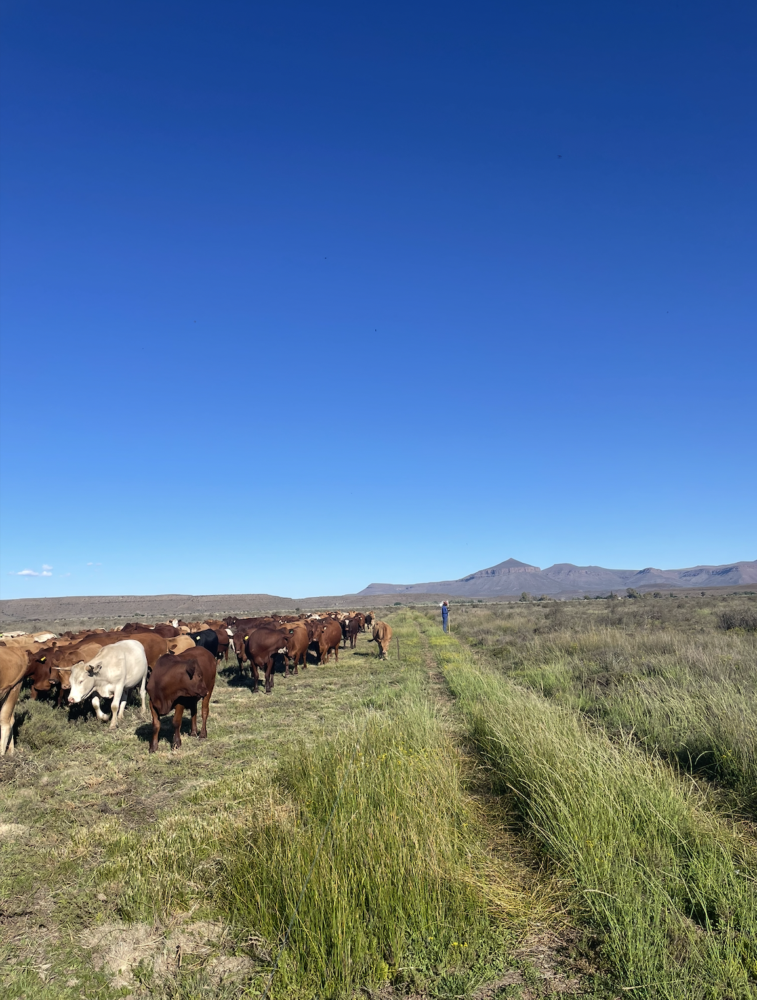

GrazeLine combines precision GPS technology with gentle behavioral guidance to give you complete visibility and control of your herd.
Replace physical fences with dynamic boundaries. Program rotations from anywhere, optimize grazing in real time, and adapt instantly to weather or pasture conditions.
Know exactly where every animal is, instantly. Real-time alerts keep you informed of any issues, enabling immediate intervention before problems escalate.
Capture rich data on animal behavior, movement patterns, and grazing practices. Build an asset that documents your sustainability efforts and unlocks premium market access.
Start simple. Real-time location tracking and herd counts give you the visibility you need to manage cattle operations efficiently.
Perfect for improving visibility without changing your current practices.
Full control without physical fences. Automated rotations and behavior tracking make regenerative grazing management effortless.
Designed for farmers ready to optimize and transition to regenerative practices.
Regenerative grazing is a management practice that uses high animal density, frequent moves, and extended rest periods to mimic natural grazing patterns. It's not just sustainable—it's restorative.
Instead of treating pasture as a fixed resource, regenerative farmers actively improve their land with every grazing cycle. The results compound: healthier soil, thriving ecosystems, and increased carrying capacity over time.

GrazeLine removes the management burden that stops most farmers from transitioning. Automated rotations mean daily moves become effortless—so you can capture all the benefits of regenerative grazing without the operational chaos.
Lightweight GPS collars fit comfortably on cattle. Low power consumption means long battery life and minimal maintenance.
Draw grazing areas on our intuitive platform. Create static zones or schedule daily rotations. Adjust anytime—from your phone or desktop.
Animals receive gentle audio warnings at boundaries (Tier 2). You get real-time notifications. Immediate visibility into what's happening on your land.
Analyze grazing patterns, movement behavior, and land response. Build a dataset that documents your stewardship and unlocks market opportunities.
Improve herd health, reduce losses, and optimize grazing rotations. Lower costs while producing cattle with documented sustainability credentials.
Maximize pasture utilization and rotational grazing efficiency. Better land management means higher milk quality and access to premium markets.
Use grazing as a conservation tool. Controlled animal movement helps restore habitats, manage invasive species, and improve ecosystem health.
Whether you're managing visibility on today's pastures or planning a transition to regenerative practices, GrazeLine gives you the tools and data to succeed.
Questions? Email us at hello@grazeline.com